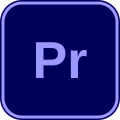
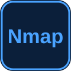

Tech I Use
The technologies I use to build responsive, user-friendly interfaces.
The languages and frameworks I use to build secure backends.
The databases I use to store and manage data.
The tools I use for design, branding and video editing.



The tools I use to learn, simulate and test networks and security.



The operating systems I work with.


The tools I use to write, test and manage code.

The platforms I use to host and deploy my projects.